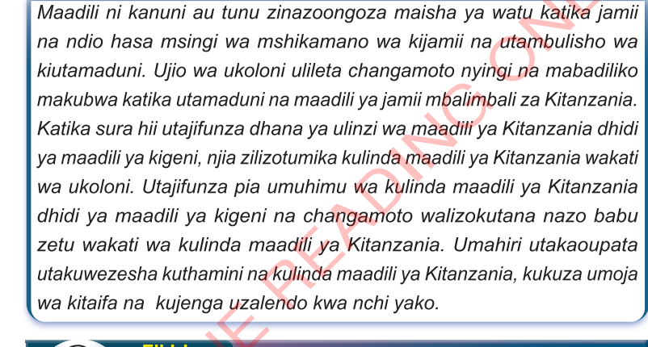

Sura ya Nne
Ulinzi wa maadili ya Kitanzania dhidi ya maadili ya kigeni

Utangulizi

Maadili ni kanuni au tunu zinazooongoza maisha ya watu katika jamii na ndio hasa msingi wa mshikamano wa kijamii na utambulisho wa kiutamaduni.Ujio wa ukoloni ulileta changamoto nyingi na mabadiliko makubwa katika utamaduni na maadili ya jamii mbalimbali za Kitanzania.Katika sura hii utajifunza dhana ya ulinzi wa maadili ya Kitanzania dhidi ya maadili ya kigeni, njia zilizotumika kulinda maadili ya Kitanzania wakati wa ukoloni.Utajifunza pia umuhimu wa kulinda maadili ya Kitanzania dhidi ya maadili ya kigeni na changamoto walizokutana nazo babu zetu wakati wa kulinda maadili ya Kitanzania.Umahiri utakaoupata utakuwezesha kuthamini na kulinda maadili ya Kitanzania, kukuza umoja wa kitaifa na kujenga uzalendo kwa nchi yako.

Dhana ya ulinzi wa maadili

Chunguza kwa kuwauliza wazazi/walezi njia mbalimbali zilizotumiwa kulinda maadili katika jamii yako kisha wasilisha darasani
Ulinzi wa maadili ni hali ya kuhakikisha kuwa tabia njema, desturi, mila, taratibu na sheria za jamii zinaendelea kuheshimiwa na kufuatwa na jamii husika. Maadili ni mwongozo wa jinsi binadamu wenye akili na utashi wanapaswa kuishi. Binadamu tunapaswa kuishi kwa uadilifu, heshima na upendo miongoni mwetu. Pamoja na mambo mengine, ulinzi wa maadili unahusisha mikakati,